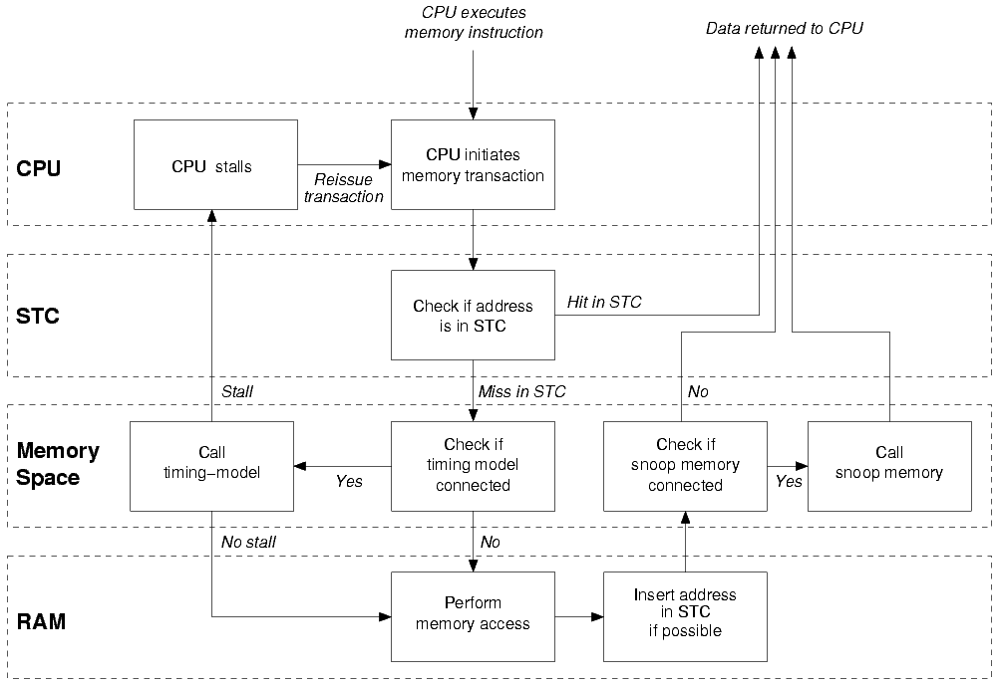

Previous - Up - Next
16.5 Summary of Simics Memory System
To summarize the different concepts introduced in this chapter, here is a
description of the path followed by a processor transaction through Simics memory
system.
|

|
| Figure 4. Transaction Path through Simics Memory System |
- The CPU executes a load instruction.
- A memory transaction is created.
- If the address is in the STC, the data is read and returned to the CPU
using the cached information.
- If the address is not in the STC, the transaction is passed along to the
CPU memory-space.
- If a timing-model is connected to the memory-space, it receives the
transaction.
- If the timing model returns a non-zero stalling time, the processor is
stalled and the transaction will be reissued when the stall time is
finished.
- If the timing model return a zero stall time, the memory-space is free
to execute the transaction.
- The memory-space determines the target object (in this example, a RAM
object).
- The RAM object receives the transactions and executes it.
- If possible, the transaction is inserted in the STC.
- If a snoop-memory is connected to the memory-space, it receives the
transaction.
- The transaction is returned to the CPU with the correct data.
Store operations works in the same way, but no data is returned to the CPU.
Note: Simics's memory system is more complex than what is presented here, but
from the point of view of a user timing-model or snoop-memory, this diagram
explains correctly at which point the main different events happen.
Previous - Up - Next